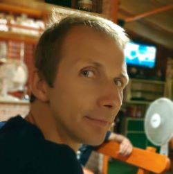

|  |
Dominik Słomkaunemployed |
I was born in 1984. Education bla bla bla... Study - unfinished. My first company: climbing accessory. Go fail. Then i start work for road construction company: Alpina. I work there four 2 or 3 years. It was horrible. I can not be employee. I start one again with my own business. I don't remember exactly. I think laboratory was second started, but in the same time I steel work on the construction site, I start to trade bikes. Later i also start the car wash and immediately second one. Bike business take to much time and giving to less money. Car ware failure from the beginning, this and pour condition of laboratory ware the reasons for my first bankruptcy. I start again. Start small. I decide to continue with laboratory. It start to working properly again, I start myself and in a few months i need once again employees. I develop the company it grow. I wont it to grow. I dreamed about big company. Nationwide or better international. But the more people work for me the worst the results was. I start to cheating. I admit it. I was buying fake invoices to pay less tax. Whole affair came up and I get into the troubles. But my business survive with even no scratch thanks to some legal transformation. I start making company even bigger even faster. I decide to act total within the law and I did so, but as you read this you can figured out what was next. Yes and No. For long time we have a grip, we was ascending on the top or rather I think so. I was buying things, invest in company, in me in my employees. But eventually, yes, financial scores went steadily down although cash flow growth. Eventually it was my biggest lose. I stick to the company to the end, to the end I belivet that we get make it. We don't, I don't. I crashed hard. I was broken. I was depressed. I really was, it was disease. Eventually I start treatment with some medicine and I get better I really do. I'm not cured yet but I'm way better. As I sed my doctor: "I want to race again!". Meanwhile my wive takeover company. She starts from nothing. Maybe except my knowledge, experience and phone contact list, but certainly without my hart. She's going really well. She is CEO, my doughter start to work with us. We are the only employees and as you may expected financial scores is getting higher. She paid off most of my debts. I faced situation in with I have no purps no clear gols. It was new for me. I allways knew that I want to be reach and I want to a big company. By now I'm sure that i don't want to be reach anymore. Please don't miss understood me i know that money are important I do not neglect that, but they're not my goal anymore. So what is? And that is hard question. I decide to focus on small goals. I do not dream big right now. I want to be algo trader it is for many reasons. You don't have to deal too much with people. You have to be expert and it's all depend on you. There's no place to making this big. It won't be a company, I will no required farther people to help me with that. Now let's talk abot the down sites. One need to have money to start, rather a lot of money. I analyse different styles of trading and I decide I want to be algotrader. I don't want to be connected all of the time to the maket. I will create my employee by my self it will do for me best. Analyzing that I decide to start as a programmer. It require onle skills witch one can easly learn. I can work remote. I don't have to cooperate too much with other people. So I start to learn and I stick to that. I do something everyday. I hope thar i will end the course by the end of year. And I hope that topl it's enought to make some money. And then we'll see.
And now lets talk about something nice.
| Date | Company | Office |
|---|---|---|
| 2007-2009 | Alpine | Motorway site construction quality management |
| 2009 | My own | Laboratory manager |
| Mountain bike riding ⭐⭐⭐⭐ | Python ⭐⭐ |
| English ⭐⭐⭐ | Quality control ⭐⭐⭐⭐⭐ |